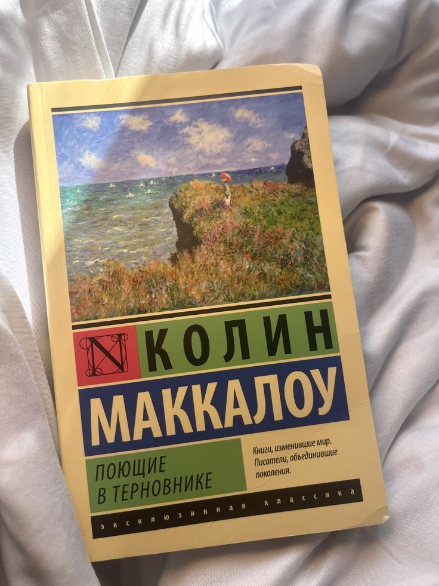
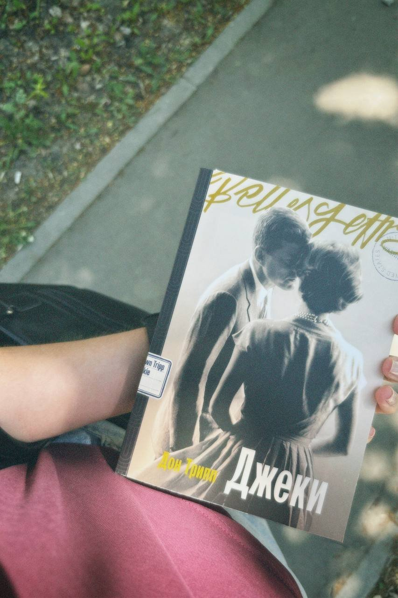

Книги, книги и ещё раз книги!
Обожаю заходить в книжные магазины, рассматривать полки и находить истории, о которых раньше ничего не знала.
На этой странице я собираю прочитанные книги и ставлю им свои оценки. Это небольшая часть моего читательского мира.
Мои оценки
Пять звёзд — книге, которая особенно запомнилась; четыре — той, которую я тоже оценила высоко.
| Название книги | Автор | Оценка |
|---|---|---|
| Поющие в терновнике | Колин Маккалоу | 5/5 ★★★★★ |
| Тата | Валери Перрен | 5/5 ★★★★★ |
| Джеки | Дон Трипп | 4/5 ★★★★☆ |
Книги на фотографиях


Мои фавориты
- «Поющие в терновнике»
- «Тата»
Подробнее о каждом произведении — в разделе «Мои отзывы».